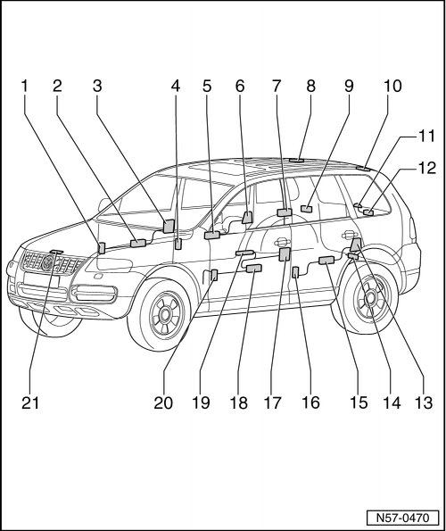

Central Locking System and Comfort System Assembly Overview
Central Locking
Central Locking System And Comfort System Assembly Overview

1 Coupling station
• Connectors (T21a), (T5e), (T4t)
• Location: Lower A-pillar, covered by footwell trim.
• Remove the right A-pillar lower trim.
2 Door control module, FR
• integrated in window regulator motor.
• Removing:
• Remove door trim
• Remove front subframe, refer to --> [ Door Lock ] Front Door.
• Remove window regulator motor, refer to --> [ Window Regulator Motor ] Front Door Windows.
3 Door lock, RF
• Door lock is secured to subframe.
• Electrical central locking system is integrated in door lock module.
• removing:
• Remove door trim
• Remove door lock, refer to --> [ Door Lock ] Front Door
4 Coupling station
• Connectors (T21c), (T5i), (T4ac)
• Location: B-pillar
• Remove the B-pillar trim.
5 Door control module, RR
• integrated in window regulator motor.
• removing:
• Remove door trim
• Remove rear subframe, refer to --> [ Door Lock ] Rear Door
• Remove window regulator motor, refer to --> [ Window Regulator Motor ] Rear Door Windows.
6 Door lock, RR
• Door lock is secured to subframe.
• Electrical central locking system is integrated in door lock module.
• Removing:
• Remove door trim
• Remove door lock, refer to --> [ Door Lock ] Rear Door
7 Comfort System Central Control Module
• Mounted on right rear wheelhouse.
• The luggage compartment trim panel up to wheel housing must be removed beforehand..
8 Coupling station
• Location: in area of rear roof crossmember, covered by roof trim.
• Remove roof trim.
9 Fuel filler door unlock motor
• Location: under C-pillar trim.
• Removing:
• The luggage compartment trim panel up to wheel housing must be removed beforehand..
• Remove motor for fuel filler door unlock.
10 Coupling station
• Location: in area of rear roof crossmember, covered by roof trim.
• Remove roof trim.
11 Rear window opening button
• attached with the rear wiper.
12 Rear window unlock unit
• Installed onto tailgate.
• removing:
• Remove the rear lid trim panel.
• Remove rear window unlock unit.
13 Door lock, LR
• Door lock is secured to subframe.
• Electrical central locking system is integrated in door lock module.
• removing:
• Remove door trim
• Remove door lock, refer to --> [ Door Lock ] Rear Door
14 Rear lid motor
• Installed onto tailgate.
• removing:
• Remove the rear lid trim panel.
• Remove positioning motor.
15 Door control module, RL
• Integrated in window regulator motor.
• Removing:
• Remove door trim
• Remove rear subframe, refer to --> [ Door Lock ] Rear Door
• Remove window regulator motor, refer to --> [ Window Regulator Motor ] Rear Door Windows.
16 Coupling station
• Connectors (T21b), (T5g), (T4x)
• Location: B-pillar
• Remove the B-pillar trim.
17 Door lock, LF
• Door lock is secured to subframe.
• Electrical central locking system is integrated in door lock module.
• Removing:
• Remove door trim
• Remove door lock, refer to --> [ Door Lock ] Front Door
18 Door control module, FL
• integrated in window regulator motor.
• Removing:
• Remove door trim
• Remove front subfram, refer to --> [ Door Lock ] Front Door.
• Remove window regulator motor, refer to --> [ Window Regulator Motor ] Front Door Windows.
19 Controls
• Installed in door trim.
• Removing:
• Remove door trim
20 Coupling station
• Connectors (T21), (T5d), (T4s)
• Location: Lower A-pillar, covered by footwell trim.
• Remove the left A-pillar lower trim.
21 Hood lock
• Anti-theft warning system contact switch
• Location: in lock carrier
• Removing lid lock, refer to --> [ Rear Lid Lock ] Hood